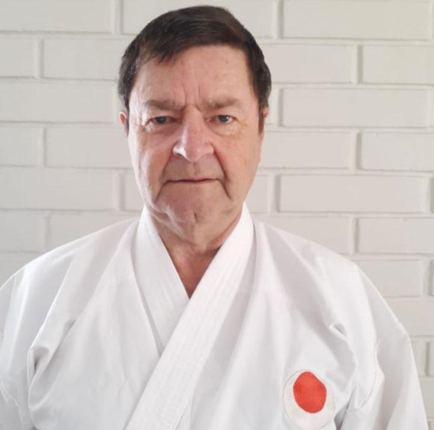
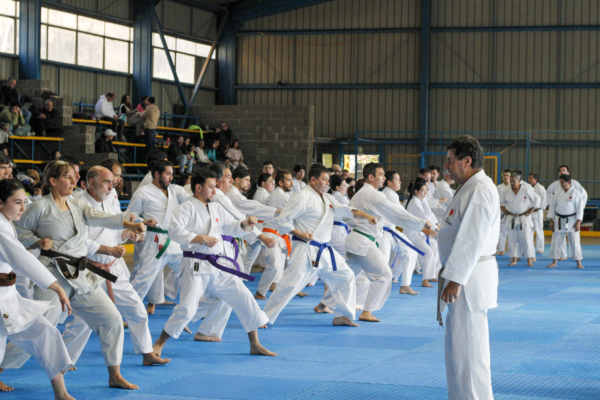

Shihan
Raul Puchi Zarecht
Director tecnico de la linea Samurai JKA Chile y referente de una formacion sostenida por decadas.

Japan Karate Association / Vina del Mar / Chile
En Samurai JKA Chile formamos ninos, jovenes y adultos en el camino del Shotokan, bajo la guia de Sensei Raul Puchi Zarecht y una linea tecnica vinculada a la Japan Karate Association.
Nuestra historia

Shihan
Director tecnico de la linea Samurai JKA Chile y referente de una formacion sostenida por decadas.
Samurai JKA Chile nace desde la practica seria del karate do tradicional en la Region de Valparaiso. La escuela ha sostenido por decadas una ensenanza centrada en kihon, kata, kumite y respeto por la etiqueta del dojo.
Nuestro Sensei es Raul Puchi Zarecht, referente de la linea Samurai en Chile y parte del directorio de JKA Chile. Su conduccion marca el estandar tecnico y formativo del dojo.
Pertenecemos a la Japan Karate Association, organizacion reconocida mundialmente por su rigor tecnico, examenes oficiales y preservacion del karate Shotokan tradicional.
Nuestro dojo principal funciona en Los Banos 55, Vina del Mar, como punto de encuentro para generaciones de practicantes y familias que han hecho del karate una forma de vida.
Cursos por edad
Clases ludicas con estructura, coordinacion basica, respeto, atencion y primeros habitos del dojo.
Desarrollo tecnico inicial, disciplina, autocontrol y progresion en kihon, kata y trabajo en pareja.
Entrenamiento mas exigente, fortalecimiento fisico, confianza y preparacion para examenes y competencias.
Formacion tecnica solida, acondicionamiento, defensa personal y practica profunda del karate tradicional.
Clases adaptadas al ritmo del grupo, con foco en movilidad, equilibrio, salud integral y continuidad marcial.
Sedes
Casa matriz verificada en Vina del Mar y cinco dojos adicionales presentados como propuesta de red para esta maqueta web.
Casa matriz
Los Banos 55, sector Recreo, Vina del Mar.
Dojo regional
Borde costero y trabajo tecnico enfocado en alumnos formativos y adultos principiantes.
Dojo regional
Programa familiar con horarios vespertinos y linea de formacion para escolares.
Dojo regional
Espacio urbano orientado a juveniles y adultos con enfasis en constancia y base tecnica.
Dojo regional
Sede pensada para familias nuevas, con cursos preinfantiles e infantiles.
Dojo regional
Proyeccion norte para seminarios intensivos, campamentos tecnicos y formacion de instructores.
Galeria


"El karate comienza y termina con respeto."